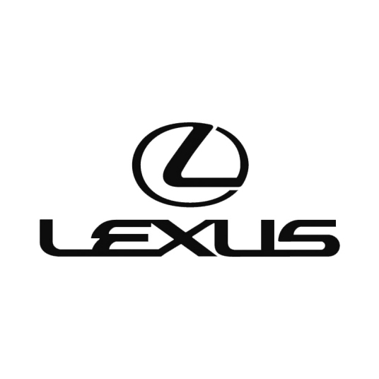

雷克萨斯

品牌简介
雷克萨斯（英语：Lexus；日语：レクサス），创立于1983年，
是日本丰田集团旗下全球著名豪华汽车品牌。该品牌仅用了十几年的时间，
销量在北美地区便超过了奔驰、宝马。 1999年起，雷克萨斯品牌连续11年位居美国豪华汽车销量第一的宝座。
2005年，雷克萨斯成功打入日本本土市场，也因此成为在全球均有销售的高级轿车品牌。
初时雷克萨斯在美国国内以“热切追求完美”（The Passionate Pursuit of Perfection）作为宣传口号，
后来以“追求完美”（The Pursuit of Perfection）作为在全球国家和地区的行销格言，直到2013年，其宣传口号改为Amazing in Motion。
2017年，正式公布全球新品牌形象的中文释义——“领未见，探非凡”（Experience Amazing）。
里程碑
- 1983年8月，丰田（TOYOTA）主席Eiji Toyota决定是时候创立一个豪华品牌来挑战世界上最好的豪华车。
- 1985年5月，一个设计小组被派往加利福尼亚设计概念车。同年7月，第一个LS400的原型被建造出来。
- 1986年5月，性能测试在德国的Autobahn展开。9月，测试在美国的公路上广泛开展。
- 1987年5月，公司管理层通过了LS400的最终设计。
- 1989年1月，LS400和ES250在底特律和洛杉矶车展除去面纱。并在同年9月上市销售。
- 1992年，Lexus销量比BMW和Mercedes-Benz多，成为美国进口豪华车的销量冠军。9月，Facelift的LS400面世，作为对顾客和经销商的要求的回应，有超过50项的改进。
- 1993年1月，1993年1月－作为雷克萨斯家族的新成员，运动型豪华轿车GS300在洛杉矶车展和底特律车展中首次亮相。
- 1993年3月，雷克萨斯GS300正式上市销售。
车辆价格
| 型号 |
售价 |
优惠价 |
| 雷克萨斯ES |
29.49w |
25.49w |
| 雷克萨斯LS |
87.8w |
50.8w |
| 雷克萨斯LC |
115.5w |
100w |
图片
荣誉
- 1994年5月－雷克萨斯GS300在J.D. Power & Associates美国新车质量调查（IQS）中获第二名（位居LS400和ES300之间）。
- 1996年6月－位于日本田原的雷克萨斯制造厂在亚洲众多生产厂中脱颖而出，获得当年J.D Power & Associates的“黄金工厂”大奖。
该工厂主要生产雷克萨斯GS300及LS400。
- 1997年2月－GS300被美国专业调查公司明智之选公司（Intelli Choice）评为豪华车级别中的“最佳总体价值”车型。
- 1997年10月－全新的GS400被美国《消费者文摘》（Consumer Digest）杂志评为豪华车级别中的“推荐产品”。
- 1997年10月－ GS400被《大众科学》（Popular Science）评为“最佳新产品”。
- 1997年11月－ GS400被美国汽车协会（AAA）授予40,000－50,000美元级别最佳全能汽车的“顶级车”奖。
- 1997年12月－GS400和 GS300高性能轿车系列被美国《汽车潮流》（Motor Trend）评为“年度最佳进口车”。
- 1998年1月－GS400和 GS300被《汽车与驾驶者》（Car & Driver）杂志评为“十大最佳房车”。
- 1998年12月－GS400和 GS300被《消费者文摘》（Consumer Digest）杂志评为“推荐产品”。
- 1999年1月GS-400和 GS 300被《汽车与驾驶者》（Car & Driver）杂志评为“十大最佳轿车”之一。